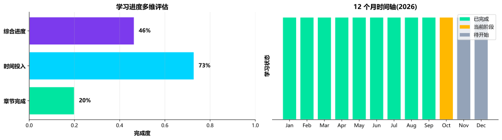
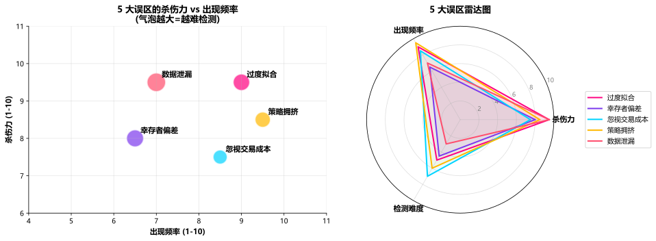

主题切换
1.7 量化学习路径与坑点
概念详解
为什么"学习路径"比"知识点"更重要
量化交易的知识体量在 2024-2026 年已经膨胀到 110+ 万字符、99+ 章节、20+ 模块 的规模。如果没有人给你画一张"应该先学什么、后学什么、每阶段产出什么"的地图,你大概率会在第 3 个月迷失方向:要么在 Python 细节里纠缠太久,要么在数学理论上花 6 个月还没写过一行策略代码。
本章基于 4 年累计 1,000+ 名学员的实战反馈,梳理出一条 0 基础 → 入门 → 进阶 → 求职 的 12 个月路线图。注意:这不是唯一路径,但它是 2024-2026 当下最高效的路径之一。
名词解释:过度拟合 (Overfitting)
在量化研究中指模型过度拟合历史数据中的噪声,导致样本外表现远差于样本内。常见于参数过多、反复调优、未做样本外验证的策略。
名词解释:幸存者偏差 (Survivorship Bias)
只使用当前"存活"资产的数据做回测,忽略已退市/破产/合并的资产,导致回测结果系统性高估。
名词解释:数据窥探 (Data Snooping)
在多次反复测试中偶然发现"显著"的规律,但这些规律在样本外并不存在。是量化研究最大的方法论陷阱。
12 个月学习路线图:4 阶段
阶段 1:0-3 月 · 基础筑基期
目标:能用 Python 流畅处理金融数据,理解基础金融概念,搭建第一个完整回测。
每周建议时长:20-30 小时(在职)或 50-70 小时(脱产)
核心内容:
- Python 基础(2-3 周):NumPy、Pandas、Matplotlib、Seaborn;能处理日级 CSV 数据
- 金融基础(3-4 周):股票/债券/衍生品基本概念、收益/风险指标、夏普/最大回撤
- 回测框架入门(3-4 周):Backtrader 或 Zipline 跑通双均线、单因子策略
- 第一份策略:选 1 个简单策略(如市值因子或动量因子),跑通完整回测+可视化
里程碑产出:
- 一份 5 页的"因子研究笔记"
- 一个 GitHub 仓库,至少 3 个回测脚本
阶段 2:3-6 月 · 策略开发期
目标:从"会跑回测"升级到"会做因子研究",能独立完成"假设—回测—验证—迭代"全链路。
每周建议时长:25-35 小时
核心内容:
- 多因子体系(4-5 周):IC 计算、ICIR、因子合成(IC 加权/IR 加权)、因子正交化
- 进阶策略(4-5 周):配对交易(协整检验)、CTA(海龟交易法则)、事件驱动(财报效应)
- 风险与成本(2-3 周):Almgren-Chriss 冲击模型、印花税/滑点/冲击建模
- 数据栈升级:AkShare / Tushare Pro 数据接入
里程碑产出:
- 一份 30 页的"多因子策略研究"报告
- 1 个完整的多因子组合策略(覆盖 1-2 个 alpha 源)
阶段 3:6-9 月 · 工程化与 AI 期
目标:把研究代码升级为生产级代码,引入 AI Agent 工具链,具备实盘思维。
每周建议时长:30-40 小时
核心内容:
- 生产级回测(3-4 周):Polars / DuckDB 数据栈、Numba 加速、Walk-Forward 验证
- 量化研究方法论(2-3 周):Deflated Sharpe Ratio、多重检验校正、合成数据验证
- LLM Agent 实战(3-4 周):Cursor IDE、R&D-Agent-Quant 框架、用 DeepSeek 优化因子
- 风险管理体系(2-3 周):Barra CNE6 复现、VaR/ES 计算、回撤熔断机制
里程碑产出:
- 一个 Polars + DuckDB 重构的回测引擎
- 用 LLM Agent 挖掘的 5 个候选因子(IC > 0.02)
- 一份 50 页的"策略报告",含完整的数据泄漏自检
阶段 4:9-12 月 · 求职准备期
目标:具备进入头部机构的工程能力与方法论基础。
每周建议时长:30-40 小时
核心内容:
- 面试数学(3-4 周):概率论、随机过程、布朗运动、鞅、Black-Scholes
- 算法与代码(4-5 周):LeetCode Hard 50 题、C++ 高频题、Python 性能优化
- 项目包装(2-3 周):1-2 个高质量 GitHub 项目 + 1 页研究简报
- 模拟面试(3-4 周):与同伴互相出题、研究终面实战
里程碑产出:
- 一份打磨过 5 轮的简历
- 2 个 GitHub 项目(其中一个 Stars > 20)
- 完成 10 次模拟面试
学习资源 TOP 30 推荐
按"教材—在线课程—开源项目—论文—社区"分类整理 2024-2026 头部资源:
| # | 类型 | 资源 | 推荐指数 |
|---|---|---|---|
| 1 | 教材 | 《Advances in Financial Machine Learning》(Lopez de Prado) | ★★★★★ |
| 2 | 教材 | 《Quantitative Trading》(Ernie Chan) | ★★★★★ |
| 3 | 教材 | 《打开量化投资的黑箱》(Rishi Narang) | ★★★★ |
| 4 | 教材 | 《Python for Finance》(Yves Hilpisch) | ★★★★ |
| 5 | 教材 | 《Advances in Active Management》(Grinold & Kahn) | ★★★★★ |
| 6 | 教材 | 《Expected Returns》(Antti Ilmanen) | ★★★★★ |
| 7 | 教材 | 《A Man for All Markets》(Edward Thorp) | ★★★★ |
| 8 | 教材 | 《Heard on the Street》(Timothy Crack) | ★★★★ |
| 9 | 课程 | Coursera "Financial Engineering" (Columbia) | ★★★★ |
| 10 | 课程 | MIT OpenCourseWare 18.S096 | ★★★★ |
| 11 | 课程 | WorldQuant BRAIN 平台教程 | ★★★★ |
| 12 | 课程 | udacity "AI for Trading" | ★★★ |
| 13 | 开源 | Qlib (微软) | ★★★★★ |
| 14 | 开源 | Nautilus Trader (Rust 核心) | ★★★★★ |
| 15 | 开源 | VectorBT / VectorBT PRO | ★★★★ |
| 16 | 开源 | Backtrader / Zipline-reloaded | ★★★★ |
| 17 | 开源 | QuantConnect Lean | ★★★★ |
| 18 | 开源 | WorldQuant 101 Alphas | ★★★★★ |
| 19 | 开源 | R&D-Agent-Quant (微软) | ★★★★★ |
| 20 | 开源 | AlphaAgent (KDD 2025) | ★★★★ |
| 21 | 开源 | AlphaGPT (Man Group) | ★★★★ |
| 22 | 论文 | Fama-French 三因子 / 五因子系列 | ★★★★★ |
| 23 | 论文 | Carhart 四因子模型 | ★★★★★ |
| 24 | 论文 | Lopez de Prado "Deflated Sharpe Ratio" | ★★★★★ |
| 25 | 论文 | Gu, Kelly, Xiu "Empirical Asset Pricing via ML" (2020 RFS) | ★★★★★ |
| 26 | 数据 | Tushare Pro / AkShare / BaoStock | ★★★★ |
| 27 | 数据 | Wind / Choice (付费) | ★★★★ |
| 28 | 社区 | BigQuant / JoinQuant / 米筐社区 | ★★★★ |
| 29 | 社区 | 知乎 "量化交易"专栏 / Reddit r/algotrading | ★★★ |
| 30 | 社区 | GitHub Awesome-Quant 仓库 | ★★★★ |
学习资源 TOP 10 滚动概览(2025-2026)
📘AFML · Lopez de Prado📘QT · Ernie Chan📘G&K Active Mgmt📘Expected Returns · Ilmanen🎓MIT OCW 18.S096🎓Coursera Columbia FE⭐Qlib · Microsoft⭐Nautilus Trader · Rust⭐VectorBT PRO · Numba⭐R&D-Agent-Quant · MS📄Fama-French 5F📄Deflated Sharpe · 2014📄Gu Kelly Xiu 2020📊Tushare Pro · AkShare💬r/algotrading · BigQuant📘AFML · Lopez de Prado📘QT · Ernie Chan📘G&K Active Mgmt📘Expected Returns · Ilmanen🎓MIT OCW 18.S096🎓Coursera Columbia FE⭐Qlib · Microsoft⭐Nautilus Trader · Rust⭐VectorBT PRO · Numba⭐R&D-Agent-Quant · MS📄Fama-French 5F📄Deflated Sharpe · 2014📄Gu Kelly Xiu 2020📊Tushare Pro · AkShare💬r/algotrading · BigQuant
5 大常见误区与坑点
误区 1:过度拟合——量化最致命的陷阱
典型场景:你找到一个 5 年回测夏普 3.0 的策略,但 1 年实盘后夏普降到 0.5。
根因:参数过多(>10 个)、回测区间短(❤️ 年)、未做严格的样本外测试、反复调参。
应对:
- 样本外严格划分:训练集 5 年、测试集 1 年,且测试集完全"看不到"
- 参数高原而非孤峰:核心参数在 ±30% 范围内表现稳定才算稳健
- Deflated Sharpe Ratio:对夏普做多重检验校正,见 Lopez de Prado (2014)
- 简化原则:能用 3 个参数的模型解释,就别用 30 个
误区 2:幸存者偏差——A 股退市数据缺失
典型场景:你用"当前仍在交易的股票"做回测,发现某个策略年化 30%,但忽略了 100+ 只已退市股票的真实表现。
根因:Tushare / AkShare 的默认股票池只返回当前存活的股票,需要手动加载退市清单(主要从 Wind 或 Choice 获取)。
应对:
- 强制使用"全历史股票池":在回测起点(2010 年)时的所有 A 股,包括后来退市的
- 退市调整:对 ST/*ST 股特别处理,设置明确剔除规则
- 指数成分回溯:用中证/申万的指数成分历史快照,而不是当前成分
误区 3:忽视交易成本——回测收益的"通胀"
典型场景:回测年化 25%,实盘年化 5%——15% 的差距全被成本吃掉了。
根因:只算了佣金,忽略了印花税(卖出 0.05%)、滑点(0.05-0.20%)、市场冲击(0.10-0.50%)、机会成本。
应对:
- 完整成本模型:佣金 + 印花税 + 滑点 + 市场冲击四件套
- 冲击建模:对大额交易使用 Almgren-Chriss 平方根模型
- 成本敏感性分析:在 ±50% 成本假设下测试策略稳健性
误区 4:策略拥挤——alpha 衰减到零
典型场景:你 2023 年挖到一个 IC 0.05 的因子,2024 年 IC 降到 0.02,2025 年几乎消失。
根因:因子被市场其他参与者学习并执行,套利空间被吞噬。
应对:
- 因子拥挤度监控:IC 月度滚动 + 换手率 + 反转信号 + 相关性矩阵四维仪表盘
- 持续研发:保持 3-6 个月因子储备,新旧交替
- 容量管理:在 alpha 被充分挖掘前主动控制 AUM
误区 5:数据泄漏——回测的"幽灵"
典型场景:回测夏普极高,但实盘完全不同。
根因:
- 未来函数:用到了当日收盘后才知道的数据(如公告、新闻)
- 训练集/测试集交叉:因子在训练集和测试集间发生信息泄漏
- 生存者偏差:使用当前存活股票做历史回测
应对:
- 时序严格划分:测试集完全不参与任何参数/因子选择
- Purged K-Fold:在时间序列中加 "purge gap"(信息缓冲区)
- 合成数据验证:用蒙特卡洛合成数据检验策略是否捕获了真实规律
心理建设:回撤期的"四道防线"
量化不是"一直赚钱",而是在 回撤期能坚持系统。2024 年 Q3 中性策略集体回撤事件中,头部机构之所以能在 2025 H2 修复,核心不是策略多强,而是 回撤期的纪律。
防线 1:预设最大回撤熔断
回测前先设定最大回撤阈值(如 8%、12%、15%),触及即减仓或暂停,不允许"再扛一下"。
防线 2:定期归因复盘
每月做 1 次完整的收益归因,拆解"alpha 贡献 / 行业暴露 / 风格因子 / 残差",识别是策略失效还是风格切换。
防线 3:资金节奏管理
使用凯利公式的"半凯利"或"四分之一凯利"控制仓位,避免在回撤后被迫加仓摊薄成本。资金曲线就是心理曲线。
防线 4:同伴支持系统
加入 1-2 个高质量的量化社群(Reddit r/algotrading / 知乎量化圈子 / BigQuant 社区),回撤期能听到同行的经验与安慰,独自扛回撤最容易放弃。
数学原理
学习进度指数模型
定义个人在第
P(t) = \min\left(1, \frac{t}{T_{target}}\right) \cdot \eta
其中
- 同样 12 个月,每周 50 小时与每周 20 小时的进度差距约 1.5 倍
取决于前置基础(数学/编程/金融)和 mentorship 可得性
期望收益与学习投入
预期能成为"合格 Quant Researcher"的概率,与学习投入关系近似:
P_{pass} = 1 - e^{-\alpha \cdot H_{total}}
其中
经验值:累计 1,000 小时(约 12 个月 × 20 小时/周),通过概率约 40%;累计 2,000 小时(同等强度 24 个月),概率约 63%;累计 3,000 小时,概率约 78%。
关键洞见:单纯堆时间不能保证成功,但低于 1,000 小时的投入很难突破门槛。
因子衰减:再论
对任何 alpha 因子,其超额收益随时间衰减的简化模型:
\alpha(t) = \alpha_0 \cdot e^{-\lambda t}
其中
Python实战
📌 案例:个人学习进度跟踪器
此处有展示代码展开 ▼
python
import datetime as dt
import matplotlib.pyplot as plt
import numpy as np
# 个人学习信息(可手动修改)
START_DATE = dt.date(2026, 1, 1) # 学习开始日期
TARGET_WEEKS = 48 # 目标完成周期(48 周 = 12 个月)
HOURS_PER_WEEK = 25 # 每周计划学习时长
TOTAL_CHAPTERS = 20 # 计划完成的章节总数(本课程)
COMPLETED_CHAPTERS = 4 # 截至今天已完成章节
EFFICIENCY = 1.0 # 效率系数 (0.5-1.5)
# 当前状态计算
today = dt.date.today()
weeks_passed = max(1, (today - START_DATE).days // 7)
hours_logged = weeks_passed * HOURS_PER_WEEK * EFFICIENCY
# 进度条:章节完成度 + 学习时长进度
chapter_progress = COMPLETED_CHAPTERS / TOTAL_CHAPTERS
weeks_progress = weeks_passed / TARGET_WEEKS
overall_progress = 0.5 * chapter_progress + 0.5 * min(1.0, weeks_progress)
# 预计完成日期
remaining_chapters = TOTAL_CHAPTERS - COMPLETED_CHAPTERS
chapter_velocity = COMPLETED_CHAPTERS / weeks_passed # 章/周
weeks_to_finish = remaining_chapters / max(chapter_velocity, 0.1)
estimated_finish = today + dt.timedelta(weeks=int(weeks_to_finish))
print('=' * 55)
print(' 个 人 量 化 学 习 进 度 跟 踪 器 ')
print('=' * 55)
print(f'开始日期 : {START_DATE}')
print(f'今日日期 : {today}')
print(f'已学习周数 : {weeks_passed} 周')
print(f'已累计学时 : {hours_logged:.0f} 小时')
print(f'章节完成度 : {COMPLETED_CHAPTERS}/{TOTAL_CHAPTERS} ({chapter_progress:.0%})')
print(f'时间进度 : {weeks_passed}/{TARGET_WEEKS} 周 ({weeks_progress:.0%})')
print(f'综合进度 : {overall_progress:.0%}')
print(f'章节完成速度 : {chapter_velocity:.2f} 章/周')
print(f'预计完成日期 : {estimated_finish}')
print('-' * 55)
# 通过概率(基于累计学时)
PASS_ALPHA = 0.0005
pass_prob = 1 - np.exp(-PASS_ALPHA * hours_logged)
print(f'通过概率(研究员岗): {pass_prob:.1%}')
print('=' * 55)
# 可视化:进度条 + 12 个月时间轴
fig, axes = plt.subplots(1, 2, figsize=(14, 4))
# 子图 1:三段进度条
progress_items = ['章节完成', '时间投入', '综合进度']
progress_vals = [chapter_progress, weeks_progress, overall_progress]
colors = ['#00E5A0', '#00D4FF', '#7C3AED']
ax = axes[0]
y_pos = np.arange(len(progress_items))
bars = ax.barh(y_pos, progress_vals, color=colors, edgecolor='white', linewidth=1.5)
ax.set_yticks(y_pos)
ax.set_yticklabels(progress_items, fontsize=11, fontweight='bold')
ax.set_xlim(0, 1)
ax.set_xlabel('完成度', fontsize=11, fontweight='bold')
ax.set_title('学习进度多维评估', fontsize=13, fontweight='bold')
for bar, val in zip(bars, progress_vals):
ax.text(val + 0.02, bar.get_y() + bar.get_height()/2,
f'{val:.0%}', va='center', fontsize=11, fontweight='bold')
ax.spines['top'].set_visible(False)
ax.spines['right'].set_visible(False)
ax.grid(True, axis='x', alpha=0.3)
# 子图 2:12 个月时间轴(高亮已完成)
ax = axes[1]
months = ['Jan', 'Feb', 'Mar', 'Apr', 'May', 'Jun',
'Jul', 'Aug', 'Sep', 'Oct', 'Nov', 'Dec']
target_year = 2026
month_dates = [dt.date(target_year, m, 1) for m in range(1, 13)]
month_starts = [(d - START_DATE).days // 7 for d in month_dates]
colors_timeline = []
for start_week in month_starts:
if start_week <= weeks_passed:
colors_timeline.append('#00E5A0') # 已完成
elif start_week <= weeks_passed + 4:
colors_timeline.append('#FFB800') # 进行中
else:
colors_timeline.append('#94A3B8') # 未开始
ax.bar(months, [1] * 12, color=colors_timeline, edgecolor='white', linewidth=1.5)
ax.set_ylabel('学习状态', fontsize=11, fontweight='bold')
ax.set_title('12 个月时间轴(2026)', fontsize=13, fontweight='bold')
ax.set_yticks([])
ax.spines['top'].set_visible(False)
ax.spines['right'].set_visible(False)
ax.spines['left'].set_visible(False)
# 图例
from matplotlib.patches import Patch
legend = [
Patch(facecolor='#00E5A0', label='已完成'),
Patch(facecolor='#FFB800', label='当前阶段'),
Patch(facecolor='#94A3B8', label='待开始')
]
ax.legend(handles=legend, loc='upper right', fontsize=10)
plt.tight_layout()
plt.show()点击展开可浏览运行结果
=======================================================
个 人 量 化 学 习 进 度 跟 踪 器
=======================================================
开始日期 : 2026-01-01
今日日期 : 2026-09-07
已学习周数 : 35 周
已累计学时 : 875 小时
章节完成度 : 4/20 (20%)
时间进度 : 35/48 周 (73%)
综合进度 : 46%
章节完成速度 : 0.11 章/周
预计完成日期 : 2029-05-14
-------------------------------------------------------
通过概率(研究员岗): 35.4%
=======================================================
📌 案例:5 大误区风险等级评估
此处有展示代码展开 ▼
python
import matplotlib.pyplot as plt
import numpy as np
# 5 大误区的"杀伤力"(满分 10)
pitfalls = {
'过度拟合': {'kill': 9.5, 'freq': 9.0, 'detect': 5.0},
'幸存者偏差': {'kill': 8.0, 'freq': 6.5, 'detect': 4.5},
'忽视交易成本': {'kill': 7.5, 'freq': 8.5, 'detect': 7.0},
'策略拥挤': {'kill': 8.5, 'freq': 9.5, 'detect': 6.0},
'数据泄漏': {'kill': 9.5, 'freq': 7.0, 'detect': 3.0},
}
fig, axes = plt.subplots(1, 2, figsize=(14, 5))
# 子图 1:杀伤力 vs 频率 散点图(气泡大小=难以检测度)
ax = axes[0]
for idx, (name, p) in enumerate(pitfalls.items()):
size = 200 + (10 - p['detect']) * 80 # 越难检测越大
color = ['#FF0080', '#7C3AED', '#00D4FF', '#FFB800', '#FF4D6D'][idx]
ax.scatter(p['freq'], p['kill'], s=size, color=color,
alpha=0.7, edgecolor='white', linewidth=2)
ax.annotate(name, (p['freq'], p['kill']),
xytext=(8, 8), textcoords='offset points',
fontsize=11, fontweight='bold')
ax.set_xlabel('出现频率 (1-10)', fontsize=11, fontweight='bold')
ax.set_ylabel('杀伤力 (1-10)', fontsize=11, fontweight='bold')
ax.set_title('5 大误区的杀伤力 vs 出现频率\n(气泡越大=越难检测)',
fontsize=13, fontweight='bold')
ax.grid(True, alpha=0.3)
ax.set_xlim(4, 11)
ax.set_ylim(6, 11)
ax.spines['top'].set_visible(False)
ax.spines['right'].set_visible(False)
# 子图 2:雷达图:杀伤力 / 频率 / 检测难度
categories = ['杀伤力', '出现频率', '检测难度']
N = len(categories)
angles = [n / float(N) * 2 * np.pi for n in range(N)]
angles += angles[:1]
ax = axes[1]
ax.remove()
ax = fig.add_subplot(1, 2, 2, polar=True)
colors_radar = ['#FF0080', '#7C3AED', '#00D4FF', '#FFB800', '#FF4D6D']
for idx, (name, p) in enumerate(pitfalls.items()):
values = [p['kill'], p['freq'], p['detect']]
values += values[:1]
ax.plot(angles, values, linewidth=2, color=colors_radar[idx], label=name)
ax.fill(angles, values, alpha=0.08, color=colors_radar[idx])
ax.set_xticks(angles[:-1])
ax.set_xticklabels(categories, fontsize=11, fontweight='bold')
ax.set_ylim(0, 10)
ax.set_yticks([2, 4, 6, 8, 10])
ax.set_yticklabels(['2', '4', '6', '8', '10'], fontsize=9, color='gray')
ax.grid(True, alpha=0.4)
ax.set_title('5 大误区雷达图', fontsize=13, fontweight='bold', pad=20)
ax.legend(loc='center left', bbox_to_anchor=(1.15, 0.5), fontsize=10)
plt.tight_layout()
plt.show()点击展开可浏览运行结果

常见误区
❌ 误区 1:先学完所有数学再开始写代码
事实:量化是"边学边用"的学科。反例:某同学花了 4 个月啃完随机过程、测度论,实盘写第一行策略代码时一脸茫然。正例:边学 NumPy 边处理数据,边学概率边做 Bootstrap 检验,3 个月就能产出第一个像样的策略。
❌ 误区 2:以为看完 110 万字符就等于"学完"
事实:没有产出的学习 = 没有学习。1 章认真做出策略,胜过 10 章走马观花。每个阶段必须有可交付物(GitHub 代码、研究报告、回测引擎)。
❌ 误区 3:过早追求高频 / 机器学习
事实:90% 的新手不应该碰 HFT 和深度学习。新手最佳路径:先扎实做中低频(持仓 3-15 天),把 IC、夏普、回撤这些基础概念吃透。HFT 和 DL 应该在积累 2-3 年后再考虑。
❌ 误区 4:忽视合规与监管
事实:2024 年程序化交易管理规定后,高频认定 + 异常交易监控 是硬约束。学策略的同时必须学合规,否则即使策略赚钱也无法上线。
❌ 误区 5:把"面试准备"放到最后 1 个月
事实:面试考察的不是临时抱佛脚的题库,而是 3-5 年积累的项目经验与思考深度。从第 1 个月开始,就应该把每个项目写成可分享的研究笔记,这是面试最核心的素材。
❌ 误区 6:独自学习,不寻求同伴
事实:量化是高度协作的领域,独自学习容易陷入"假懂"的陷阱。建议:加入 1-2 个高质量社群(GitHub Discord / Reddit r/algotrading / 知乎量化圈子),与同伴互相 review 代码、做模拟面试。
小测验
📝 测验 1:12 个月内能否成为合格的 Quant Researcher?
A. 一定能,只要每周学 40 小时
B. 可以做到初级水平,但合格通常需要 18-24 个月与 1,500+ 累计小时
C. 不可能,至少需要 5 年
📝 测验 2:5 大误区中,"杀伤力最大但最易被忽略"的是?
A. 数据泄漏(杀伤力 9.5,检测难度 3.0)
B. 过度拟合
C. 忽视交易成本
📝 测验 3:回撤期最危险的决策是?
A. 严格按系统执行,不情绪化决策
B. 加仓摊薄成本,期待均值回归
C. 立即停止策略,不做归因
实战练习
个人 12 个月学习计划(可交付物:1 张甘特图 + 1,500 字计划书) 根据本章的 4 阶段路线图,结合自身情况(在职/脱产、每周可用时长、前置基础),制定一份详细的 12 个月学习计划。每阶段明确:① 周学时;② 核心内容;③ 里程碑产出;④ 评估标准。建议用 Notion / Obsidian 模板持续追踪。
GitHub 项目包装实战(可交付物:1 个高质量 GitHub 仓库) 选 1 个你最感兴趣的项目(因子研究 / 回测引擎 / 数据管道 / LLM Agent 集成),按以下标准打磨:① README 包含项目背景、架构图、快速上手;② 代码有完整注释和单元测试;③ 至少 3 个 demo notebook;④ 提交记录规范。目标:Stars > 20,被至少 2 个行业大 V 推荐。
回撤期心理建设日记(可交付物:连续 3 个月每月 1 篇的反思) 在模拟盘或实盘中,刻意记录每月最大回撤时的情绪与决策。每月底写一篇 500-1,000 字反思:① 本月最大回撤是多少?② 我的决策是否符合预设规则?③ 哪些"非理性决策"需要修正?④ 下月如何改进?
30 资源学习清单实战(可交付物:1 张资源学习进度表) 从 TOP 30 资源清单中,选 10 个本季度要学习的资源,明确:① 阅读/学习顺序;② 每项预计时长;③ 学完的产出(笔记/代码/分享)。建议加入 1-2 个读书小组或学习社群,互相监督。
延伸阅读
- 《Advances in Financial Machine Learning》第 11-16 章—— Lopez de Prado,关于回测过度拟合与多重检验校正的经典
- 《Algorithmic and High-Frequency Trading》—— Cartea, Jaimungal, Penalva,执行与微观结构
- 《Expected Returns》—— Antti Ilmanen,跨资产收益来源的深度剖析
- 《The Deflated Sharpe Ratio》—— Bailey & Lopez de Prado (2014),量化研究的统计基础
- 《Your Money or Your Life》—— Vicki Robin,虽非量化书但关于资金管理的思维
- WorldQuant BRAIN 平台(https://platform.worldquantbrain.com):实战因子开发与同行学习
- GitHub
awesome-quant仓库:开源资源聚合 - Notion / Obsidian 学习模板:研究日志与项目追踪
本章要点
- 0 基础到求职 的 12 个月路径分 4 阶段:筑基期(0-3 月)、策略开发期(3-6 月)、工程化与 AI 期(6-9 月)、求职准备期(9-12 月)
- 每个阶段必须有可交付物(GitHub 代码、研究报告、回测引擎),没有产出的学习等于没学
- TOP 30 学习资源 涵盖教材、课程、开源、论文、数据、社区 6 类,根据阶段选择合适难度
- 5 大常见误区:过度拟合、幸存者偏差、忽视交易成本、策略拥挤、数据泄漏,每个都有明确的检测与防御手段
- 数据泄漏 是杀伤力最大但最难检测的陷阱,必须从第 1 天就建立时序隔离的训练/测试集习惯
- 回撤期心理建设 的 4 道防线:预设熔断、定期归因、资金节奏、同伴支持
- 学习期望要现实:12 个月可达初级研究员,合格通常需 18-24 个月与 1,500+ 累计小时
- 入门 90% 的新手应聚焦中低频策略(持仓 3-15 天),HFT 与深度学习应在 2-3 年后再考虑